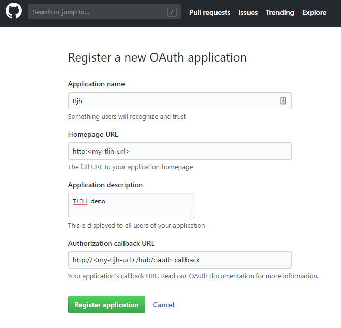
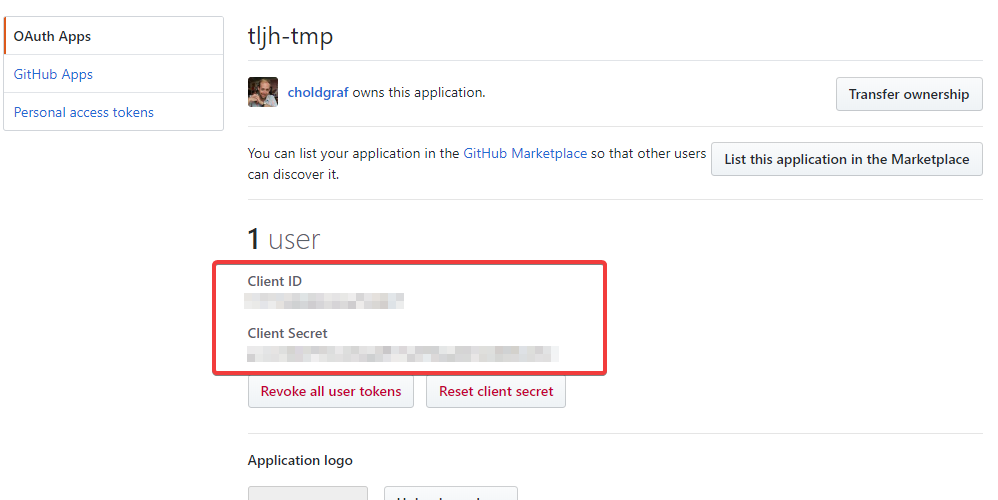
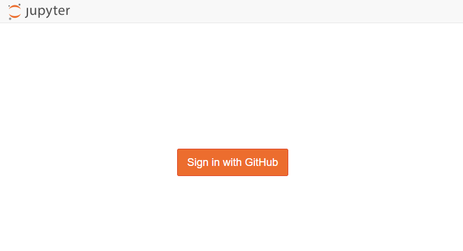

Authenticate using GitHub Usernames¶
The GitHub Authenticator lets users log into your JupyterHub using their
GitHub user ID / password. To do so, you’ll first need to register an
application with GitHub, and then provide information about this
application to your tljh configuration.
Note
You’ll need a GitHub account in order to complete these steps.
Step 1: Create a GitHub application¶
Go to the GitHub OAuth app creation page.
Application name: Choose a descriptive application name (e.g.
tljh)Homepage URL: Use the IP address or URL of your JupyterHub. e.g.
http://<my-tljh-url>`.Application description: Use any description that you like.
Authorization callback URL: Insert text with the following form:
http://<my-tljh-ip-address>/hub/oauth_callback
When you’re done filling in the page, it should look something like this:

Click “Register application”. You’ll be taken to a page with the registered application details.
Copy the Client ID and Client Secret from the application details page. You will use these later to configure your JupyterHub authenticator.

Important
If you are using a virtual machine from a cloud provider and stop the VM, then when you re-start the VM, the provider will likely assign a new public IP address to it. In this case, you must update your GitHub application information with the new IP address.
Configure your JupyterHub to use the GitHub Oauthenticator¶
We’ll use the tljh-config tool to configure your JupyterHub’s authentication.
For more information on tljh-config, see Configuring TLJH with tljh-config.
Log in as an administrator account to your JupyterHub.
Open a terminal window.

Configure the GitHub OAuthenticator to use your client ID and secret with the following commands:
sudo -E tljh-config set auth.GitHubOAuthenticator.client_id '<my-tljh-client-id>'
sudo -E tljh-config set auth.GitHubOAuthenticator.client_secret '<my-tljh-client-secret>'
Tell your JupyterHub to use the GitHub OAuthenticator for authentication:
sudo -E tljh-config set auth.type oauthenticator.github.GitHubOAuthenticator
Restart your JupyterHub so that new users see these changes:
sudo -E tljh-config reload
Confirm that the new authentactor works¶
Open an incognito window in your browser (do not log out until you confirm that the new authentication method works!)
Go to your JupyterHub URL.
You should see a GitHub login button like below:
After you log in with your GitHub credentials, you should be directed to the Jupyter interface used in this JupyterHub.
If this does not work you can revert back to the default JupyterHub authenticator by following the steps in Let users choose a password when they first log in.